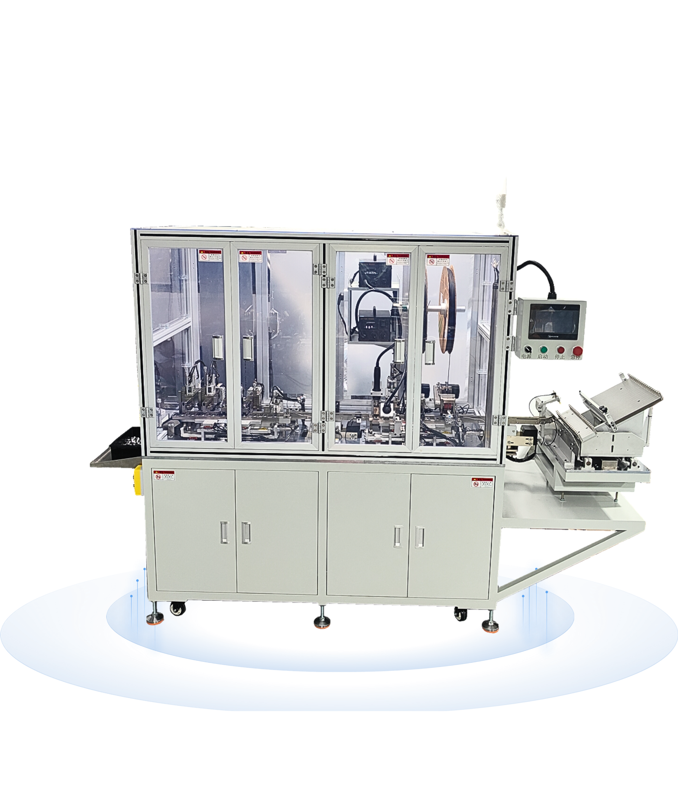
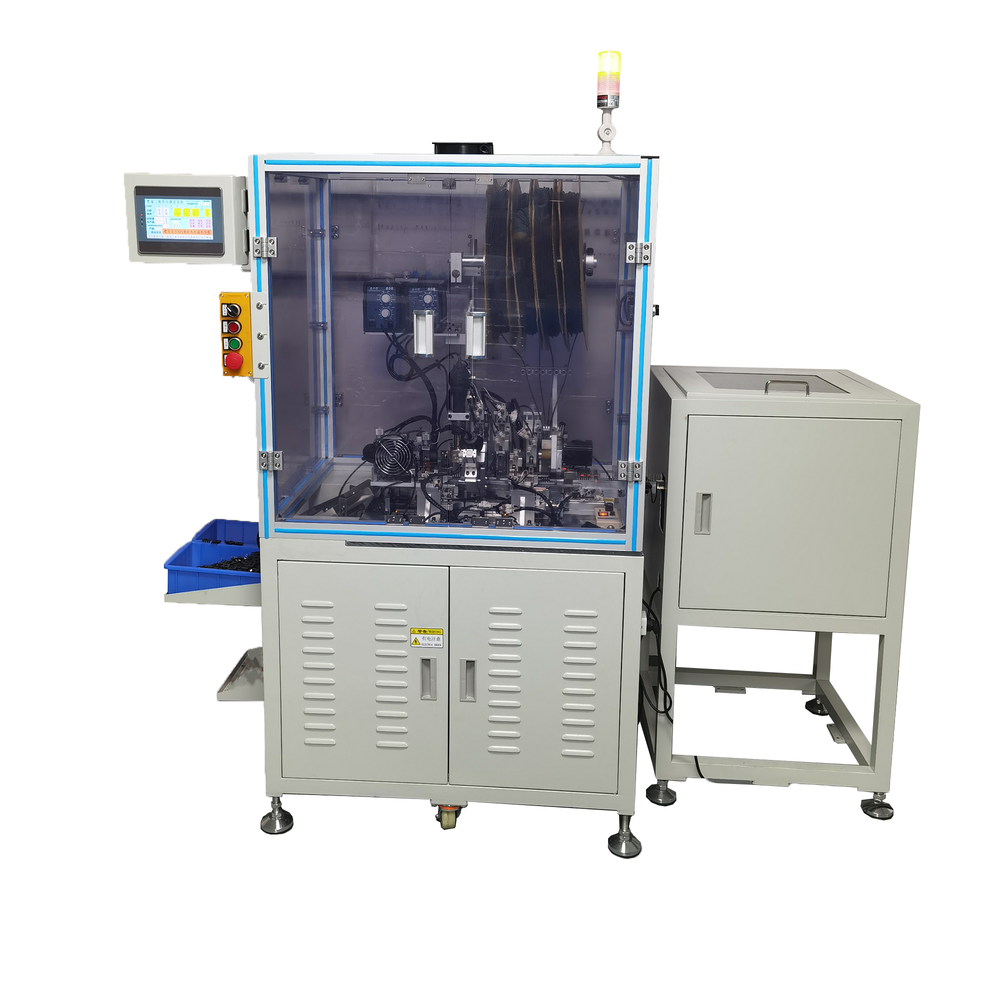
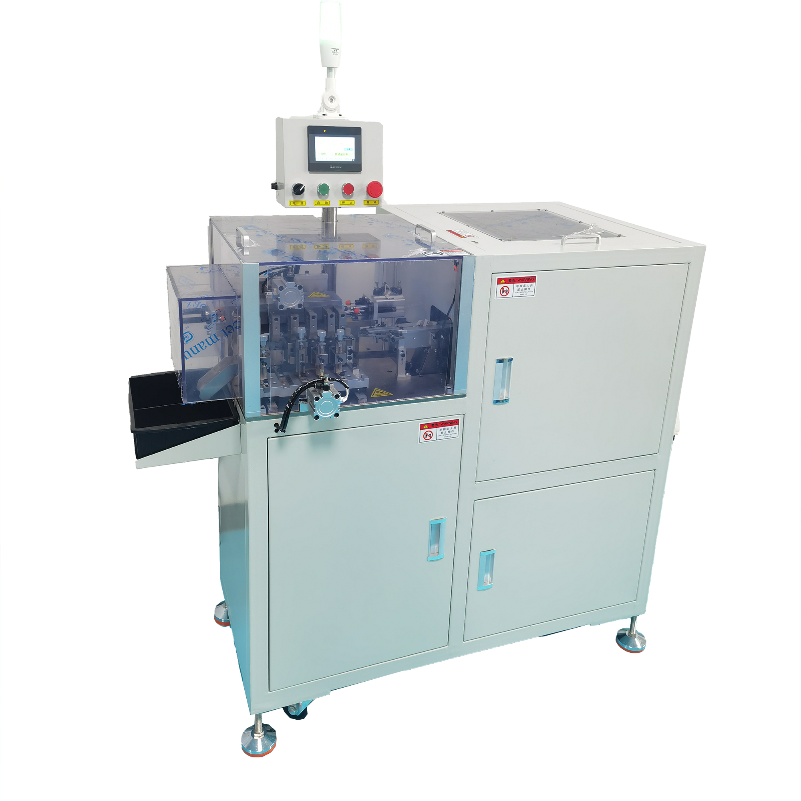
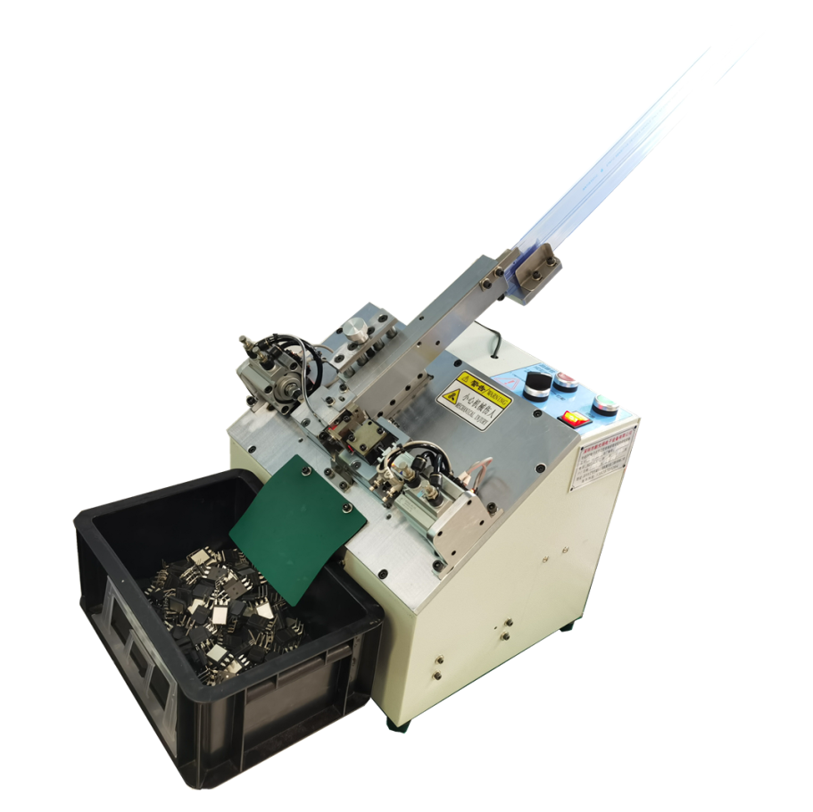
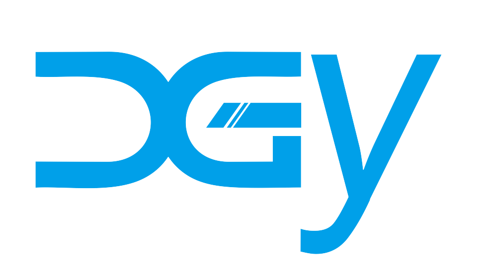
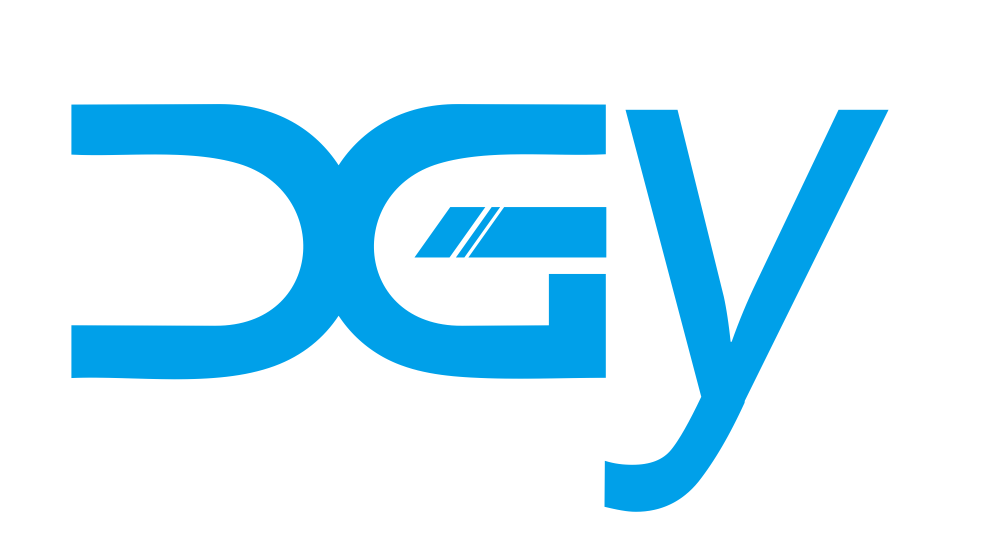

广东新光扬电子设备有限公司官网资料分析报告
本报告基于 public/website-content、产品目录 PDF、public/logo、public/products、客户 Logo 与证书目录建立资料索引。分析过程未修改项目源码。
资料索引
当前资料分为文字内容、产品目录、品牌视觉、产品图片、客户背书和资质图片六类。文字内容中可直接使用的文件主要是首页文案、企业介绍、企业优势、产品分类、应用行业、合作客户；制造实力、资质认证、联系我们、SEO 关键词四个 Word 文件目前为空。
public/website-content/01-首页文案.docx.docx：首页结构、Hero 文案、首页推荐产品、行业、客户、SEO 建议。public/website-content/02-企业介绍.docx.docx：公司简介、定位、使命、愿景、价值观、主营业务、技术能力、服务优势。public/website-content/03-企业优势.docx.docx：六项企业优势与首页优势模块建议。public/website-content/04-产品分类.docx.docx：官网产品分类、核心型号、用途说明和展示规范。public/website-content/06-应用行业.docx.docx：六大应用行业及推荐设备。public/website-content/07-合作客户.docx.docx：客户 Logo 墙展示建议与待确认客户名称。public/downloads/新光扬简介及产品目录.pdf：图片型产品手册，文本不可直接提取，已通过逐页图像阅读建立型号索引。public/logo/：包含蓝色 Logo 与白色 Logo。public/products/：包含核心型号产品图和两张产品/元件组合图。
公司介绍总结
新光扬电子设备有限公司是一家专注于电子元器件自动化设备研发、制造、销售及技术服务的专业企业，产品覆盖元器件自动成型、自动组装、自动焊接、自动穿管及非标自动化设备。公司资料强调技术创新、品质制造、客户需求和售后服务，适合在官网中塑造成“电子元器件自动化设备专业制造商”的品牌定位。
网站定位应以企业宣传和产品展示为主，不做在线商城。主要受众包括国内电子制造企业、海外设备采购商、自动化设备代理商、新能源企业、汽车电子企业和 EMS 电子制造企业。
产品分类
Word 产品分类文件给出了官网优先采用的四类产品体系，适合作为产品中心一级分类。PDF 手册显示公司实际产品线还覆盖 LED 成型、电容成型、IC 成型、PCB 分板、跳线、条码扫描比对、PCBA 刷板/清洗、炉温测试等更多设备，后续产品中心可分阶段扩充。
| 官网一级分类 | 分类说明 | Word 中已整理型号 | PDF 中相关扩展型号 |
|---|---|---|---|
| 电子元件成型设备 | 用于电子元器件引脚加工、剪脚、折脚、整形、自动送料和连续生产。 | NS-317、NS-800A、NS-800B、NS-800T、NS-806、NS-806A、NS-807、NS-810、NS-816 | NS-880、NS-830、NS-806B、NS-320/NS-330、NS-309A、NS-309L、NS-309、NS-300G、NS-307W、NS-307、NS-308S、NS-109、NS-101、NS-113、NS-110、NS-111、NS-402、NS-400 等 |
| 自动组装设备 | 用于电子元件与端子的自动组装、连接与焊接。 | NS-850、NS-865 | NS-880 属于点胶套磁环成型摆盘一体机，可作为组合型自动化设备补充展示。 |
| 保险丝加工设备 | 用于电阻、保险丝等元器件自动穿管与成型。 | NS-860 | NS-860 在 PDF 中以“编带/散装电阻保险丝穿管成型机”展示。 |
| 非标自动化设备 | 按客户产品结构、生产工艺和自动化需求定制开发。 | 无固定型号，按需求定制 | 可覆盖自动送料、自动组装、自动焊接、自动检测、上下料、包装及整线方案。 |
| PCB 与辅助设备 | Word 未单列，但 PDF 中有明显产品群。 | 未整理 | NS-790、NS-785A、NS-780、NS-785B、NS-60A、NS-100、NS-06 等。 |
| 跳线设备 | Word 未单列，但 PDF 中有跳线机系列。 | 未整理 | NS-550、NS-520、NS-530、NS-500。 |
产品系列与型号
以下索引以 Word 文件为官网第一版产品中心依据，同时补充 PDF 手册中读取到的更多型号。第一版官网建议先上线 Word 已整理且有独立图片的核心产品，再逐步补齐 PDF 中的扩展型号。
| 系列 | 型号 | 产品名称或用途 | 图片状态 |
|---|---|---|---|
| 首页重点产品 | NS-317 | 自动散装立式元件成型机 | 已有独立图片 |
| 电子元件成型设备 | NS-800A | 自动多管供料三极管成型机 | 已有独立图片 |
| 电子元件成型设备 | NS-800B | 自动散装 MOS 管成型机 | 已有独立图片 |
| 电子元件成型设备 | NS-800T | 管装三极管成型机 | 已有独立图片 |
| 电子元件成型设备 | NS-806 | 管装三极管成型机 | 已有独立图片 |
| 首页重点产品 | NS-806A | 自动管装气动式 IGBT 成型机 | 已有独立图片 |
| 电子元件成型设备 | NS-807 | 管装 MOS 成型装管机 | 已有独立图片 |
| 电子元件成型设备 | NS-810 | 自动散装桥堆成型机 | 已有独立图片 |
| 电子元件成型设备 | NS-816 | 自动散装三极管成型装管机 | 已有独立图片 |
| 扩展成型设备 | NS-830 | 单边带式零件穿管成型机 | 已有独立图片 |
| 首页重点产品 | NS-850 | 元件和端子自动组装机/焊接机 | 已有独立图片 |
| 首页重点产品 | NS-860 | 电阻保险丝穿管成型机 | 已有两张图片 |
| 首页重点产品 | NS-865 | 方形物料自动穿套热缩管剪脚成型机 | 已有独立图片 |
| PDF 扩展型号 | NS-880 | 自动二极管点胶套磁环成型摆盘一体机 | 缺少独立产品图，仅 PDF 内有图 |
| PDF 扩展型号 | NS-806B、NS-320/330、NS-309A、NS-309L、NS-309、NS-300G、NS-307W、NS-4030、NS-300、NS-306、NS-306Y、NS-312、NS-302、NS-301、NS-402、NS-400、NS-308S、NS-307、NS-109、NS-101、NS-113、NS-110、NS-111、NS-790、NS-785A、NS-780、NS-785B、NS-550、NS-520、NS-530、NS-500、NS-100、NS-60A、NS-06 | LED、电容、IC、PCB、跳线、扫描比对、清洗、测试等设备 | 大多缺少独立产品图片 |
首页值得展示的产品
首页应优先展示“代表性强、图片质量高、覆盖不同产品类别”的设备。现有资料明确建议首页展示 NS-317、NS-800A、NS-806A、NS-850、NS-860、NS-865，这组选择合理，既覆盖成型、IGBT、组装焊接、穿管成型，也能展示自动化设备体量与专业度。
| 优先级 | 型号 | 推荐理由 | 首页展示方式 |
|---|---|---|---|
| 高 | NS-865 | 设备体量大、图片完整，适合体现自动化产线级能力。 | 首页精选产品首位或 Hero 右侧候选。 |
| 高 | NS-317 | 自动散装立式元件成型机，图片清晰，能代表核心成型设备。 | 产品卡片与产品中心入口。 |
| 高 | NS-806A | IGBT 成型设备，契合新能源、汽车电子、电力电子应用。 | 首页重点产品，适合绑定新能源/汽车电子场景。 |
| 高 | NS-850 | 自动组装/焊接设备，覆盖组装设备分类。 | 首页展示产品分类多样性。 |
| 中高 | NS-860 | 保险丝/电阻穿管成型，已有两张图，可展示不同配置。 | 产品中心可放两图，首页选视觉更完整的一张。 |
| 中高 | NS-800A | 多管供料三极管成型机，外观有机械细节，适合代表三极管设备。 | 首页第二排精选或产品中心重点。 |
| 中 | NS-800B、NS-807、NS-810、NS-816 | 适合补充成型设备阵列，让产品中心更完整。 | 产品中心优先，首页可不全部展示。 |
首页图片建议
首页图片应优先选择画面干净、设备完整、背景容易融合的素材。当前最适合首页的图包括 products2.png、NS-865.png、NS-317.png、NS-806A.png、NS-860（2）.png；products1.png 更适合说明“可加工电子元器件样品”，不适合作为主 Hero 设备图。

products2.png最适合 Hero 右侧或首页主视觉。

NS-865.png适合首页精选产品与能力展示。

NS-317.png适合首页核心产品卡片。

NS-806A.png适合新能源/汽车电子关联展示。
产品中心图片建议
产品中心应采用“产品图片 + 正式产品名称 + 型号 + 简要用途”的卡片结构。现有 public/products 中的 14 张型号图可以支撑第一版产品中心，但 PDF 手册中更多扩展型号尚缺独立图片，不能直接做完整产品详情页。
| 图片 | 适合位置 | 备注 |
|---|---|---|
NS-317.png、NS-800A.png、NS-800B.png、NS-800T.png、NS-806.png、NS-806A.png、NS-807.png、NS-810.png、NS-816.png | 电子元件成型设备分类 | 产品分类 Word 已有正式名称和用途，可直接建立第一版卡片。 |
NS-850.jpg、NS-865.png | 自动组装设备分类 | 图片质量差异较大，NS-850 分辨率偏低，建议后续补高清图。 |
NS-860（1）.jpg、NS-860（2）.png | 保险丝加工设备分类 | 可作为同一产品的两种配置图或详情页图集。 |
NS-830.jpg | 扩展成型设备 | Word 产品分类未列入，PDF 中有对应产品，可作为扩展型号。 |
products1.png | 产品中心介绍、应用元件展示 | 展示可加工元件样品，不应作为设备产品卡片。 |
products2.png | 首页 Hero、产品中心顶部 Banner | 设备完整，适合大视觉，但不适合某个单品卡片。 |
Logo 与品牌素材
public/logo/logo.png 是蓝色 DGY/XGY 视觉标识，尺寸为 984 × 556，适合白底导航、浅色区域和资料页使用。logo-white.png 尺寸相同，适合深色 Hero、深色页脚或蓝色背景上使用。

logo.png白底导航、浅色页面。

logo-white.png深色背景、Hero、页脚。
客户与资质素材
客户 Logo 目录中已有 11 个品牌图片，合作客户 Word 建议首页展示 8 到 12 家代表客户 Logo，适合做 Logo Wall 或横向滚动。证书目录中已有 2 张证书和 2 张专利图，适合做首页资质展示和资质认证页面。
| 素材类型 | 现有文件 | 适合用途 | 注意事项 |
|---|---|---|---|
| 客户 Logo | bulllogo.png、casiologo.jpg、foxlogo.jpg、hcfalogo.png、jlclogo.jpg、leapmotorlogo.jpg、leililogo.jpg、longoodlogo.jpg、panasonicogo.png、sineelogo.jpg、starogo.png | 首页合作客户、客户页面 Logo 墙 | 上线前需确认展示授权和品牌名称。 |
| 证书/专利 | certificate1.png、certificate2.png、patent1.jpg、patent2.jpg | 首页资质背书、资质认证页面 | 对应 Word 文件为空，缺少证书名称、发证机构、年份等说明。 |
缺失资料
现有资料足以支撑“官网第一版首页 + 核心产品中心”，但还不足以支撑完整、多页面、强信任感的企业官网。缺失资料主要集中在制造实力、联系方式、真实场景、产品详情和扩展型号图片。
| 缺失项 | 当前状态 | 影响 | 建议补充 |
|---|---|---|---|
| 工厂/车间/产线照片 | 未发现独立文件，制造实力 Word 为空。 | 制造实力页面缺少可信视觉支撑。 | 补充厂房外观、装配区、调试区、设备运行、仓储发货等照片。 |
| Hero 专用图片 | 只有产品图，没有横幅级 Hero 图。 | 首页首屏视觉可能不够企业化。 | 补拍设备大图或使用设备抠图 + 工业科技背景设计。 |
| 产品详情文字 | 05-产品详情 是空目录。 | 无法直接生成完整产品详情页。 | 按型号补充参数、产品特点、适用元件、应用行业、视频或案例。 |
| PDF 扩展型号独立图片 | PDF 有大量型号，但 public/products 仅覆盖部分核心型号。 | 产品中心无法完整展示手册全部产品。 | 从原始素材导出清晰单品图，或从手册中重新裁切并统一命名。 |
| 联系方式 | 10-联系我们.docx.docx 为空；PDF 首页有电话、邮箱和地址信息，但需确认。 | 联系页和页脚信息不完整。 | 确认公司名称、地址、电话、邮箱、二维码、地图链接、备案信息。 |
| SEO 关键词完整表 | 11-SEO关键词.docx.docx 为空；首页文案中有基础关键词。 | 后续多页面 SEO 不够系统。 | 按产品、行业、应用场景补充中文和英文关键词。 |
| 资质证书说明 | 有图片，Word 为空。 | 证书展示缺少文字解释。 | 补充证书名称、专利名称、编号、发证机构、展示授权边界。 |
| 客户案例/授权 | 有 Logo 和待确认客户名单。 | 不能写客户评价或案例故事。 | 确认可展示客户名单，若有案例再补充项目背景和应用设备。 |
首页与产品中心建议
首页第一版建议聚焦“专业制造商 + 核心产品 + 行业应用 + 客户背书 + 资质展示”，避免一次性堆满 PDF 手册中的全部产品。产品中心第一版建议先上线 Word 中整理好的 12 款标准产品，并在后续补图后扩展 PDF 手册中的更多型号。
- 首页 Hero：使用
products2.png或NS-865.png作为设备视觉，配合“专注电子元器件自动化设备研发与制造”。 - 首页推荐产品：NS-317、NS-800A、NS-806A、NS-850、NS-860、NS-865。
- 产品中心第一屏：按电子元件成型设备、自动组装设备、保险丝加工设备、非标自动化设备四类组织。
- 产品中心产品卡片：优先使用现有独立产品图，不建议直接用 PDF 页面截图作为产品图。
- 应用行业：消费电子、汽车电子、新能源、工业控制、电源及电力电子、电子元器件制造企业。
- 合作客户：可先做 Logo 墙，但上线前必须确认授权。